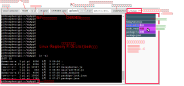
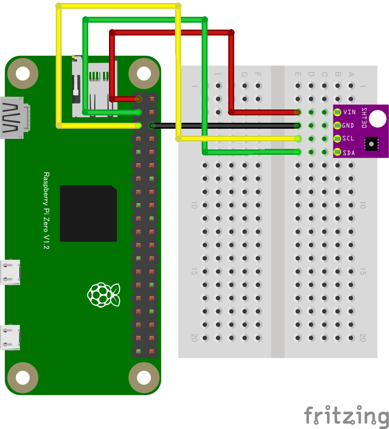

CHIRIMEN チュートリアル概要

CHIRIMEN Raspberry Pi Zero 版を用いたIoT実習資料です。
開発環境に Raspberry Pi Zero W を使い、開発言語に JavaScript を用いて、様々なセンサーやアクチュエーターを動かし、IoTプロトタイピングを可能にします。
概要では CHIRIMEN / RaspberryPi / JavaScript について解説します。
既に CHIRIMEN を体験している（使い慣れている）方に向けた情報リンク集も掲載します。
目次
- チュートリアル概要
- 機材準備と Wi-Fi への接続
- Hello Real World（Lチカを実行する）
- GPIOを試す
- I2Cデバイスを試す
- IoTを試す
- 常駐プログラム化する
- 他のいろいろなデバイスを試してみる
- 付録(予備知識)
- 共通資料集
1.1 CHIRIMEN について

CHIRIMEN とは、Webの標準的な技術・ブラウザやNode.js等で実行できるJavaScript で電子パーツを制御し、フィジカルコンピューティングや IoTシステムを開発可能なプロトタイピング環境です。
デジタルのソフトとフィジカルなハードをWWW上で連携するデバイスを Web標準技術、JavaScript だけで容易に実現できます。
CHIRIMEN Raspberry Pi Zero版について
- PiZero上ではWeb Browserを動かさない。
- Node.jsというJavaScriptインタープリターだけが動く
- ブラウザの機能のうち一部だけがPiZero上で使える
- プログラミング言語 ～ JavaScript
- 画面表示やGUIに関わらないAPI
- 通信プロトコル
- 使えないのはブラウザを使った画面表示やGUI
- ブラウザの機能のうち一部だけがPiZero上で使える
- ブラウザを使った画面やGUIは
- ネットを介してスマホやPCからコントロール ⇒ これが代表的にIoTと呼ばれるデザインパターン
- このとき、Raspberry Pi Zeroは、IoTエッジデバイスとして動作
- ネットを介してスマホやPCからコントロール ⇒ これが代表的にIoTと呼ばれるデザインパターン
1.1.1 CHIRIMEN コミュニティ
- CHIRIMEN についてもっと詳しく知りたい！
- 自分も開発に参加してみたい！
などなど、興味を持たれた方は CHIRIMEN コミュニティへ是非参加してください。開発のできるエンジニアでなくとも、使っていて気になる点のフィードバックだけでも参加歓迎します。
ご希望の方は、こちらの Slack に参加をお願いします。
初めてコミュニティに参加希望の方はこちらのフォームから登録してください。
1.2 Raspberry Pi について
- 教育・学習用として設計されたシングルボードコンピュータ
- Linuxが動作するシングルボードコンピュータとして、安価でとても高いシェアを持ち世界中で容易に入手できる
- 今回使用する Raspberry Pi Zero WH は、その中でも特に安価 (3,000円程度)で小型・低消費電力の機種、HDMI 出力はあるもののブラウザを動かすだけの処理能力がありませんが、IoT のエッジデバイス（センサーやアクチュエータが載ったデバイスでディスプレイはあるとしても簡易のもの）には適しています。
- フルセットのブラウザが内蔵されたデバイスを作りたい場合はCHIRIMEN Raspberry Pi版が使用できます。
- インターネットを経由してPCやスマホのブラウザから遠隔操作するシステムは この Pi Zero W 版でつくれます。IoTの章まで進めましょう。
- 同じサイズの上位機種として、Raspberry Pi Zero 2 W も発売されました。こちらも CHIRIMEN は対応しており、より性能を必要とする開発も可能になりました。
1.3 JavaScript の基礎
標準化されたプログラミング言語の一種で、ウェブブラウザが代表的な実行環境です(プログラムコードを解釈して動作させるシステム)。CHIRIMEN では JavaScript で各種開発を行います。より詳細な情報は 10.3 JavaScript を参照してください。
以下に初めて学ぶ方やより詳しい情報を知りたい方に向けたテキストが公開されています。
Web開発をはじめよう
Web開発を始める方に向けた入門ガイドです。JavaScript の他に HTML/CSS を用いる Web開発の基礎から GAS（Google Apps Script）を利用したアプリ開発まで解説されています。
JavaScript 1 Day 講習
初めてプログラミングする人に 1 日で JavaScript を教えるときにちょうど良いボリューム・内容の資料です。
JavaScript Primer - ECMAScript 2019時代のJavaScript入門書
最新言語仕様も考慮した本格的な JavaScript 入門書です。開発ツールなどについても 付録: 参考リンク集 が参考になります
JavaScript チートシート
JavaScript の基本的な言語機能をまとめたチートシートです。プログラミング初心者はこちらを参照しながらコードを読み書きされることをオススメします。
非同期処理 (async await) 解説
ハード制御で必ず必要だが引っかかる人が多い非同期処理について簡単な解説です。非同期処理についてより詳しくは JS Primer の非同期処理説明ページ をご覧ください。
1.4 良く使う情報へのリンク
CHIRIMEN PiZero 版で良く使われるリンクをまとめたページです。
CHIRIMEN に関するリンク集
- Web Serial RPiZero Terminal
- CHIRIMEN with Node.js / RPi Zero Examples
- CHIRIMEN パネル の examples に PC からアクセスできます。
- CHIRIMEN 対応デバイスリスト
- PiZero版に限らず、全ての CHIRIMEN に対応したデバイスリストです。
開発に有用な情報サイト集
- Web開発をはじめよう
- Web開発を始める方に向けた入門ガイドです。
- JavaScript Primer - ECMAScript 2019時代のJavaScript入門書
- 最新言語仕様も考慮した本格的な JavaScript 入門書です。
- JavaScript チートシート
- JavaScript の基本的な言語機能をまとめたチートシートです。
- GitHub ハンズオン(PDF)
- GitHub の基本的な使い方の分かるハンズオン資料です。
- CodeSandbox ガイド
- ブラウザ上で開発する CodeSandbox の使い方を確認しましょう。
2. 準備
CHIRIMEN PiZero チュートリアルを実施するために必要な機材の準備や、環境設定を解説します。各ステップに従って準備を進めてください。
2.1 ステップ０ (物品準備、PCをWiFiに接続)
必要な物品リスト
以下を用意します
- Raspberry Pi Zero W (または Pi Zero 2 W)
- microSDカード
- CHIRIMEN Lite 最新リリース版を書き込みます
- 自分でイメージを書き込む場合は「SDカードの作成の手順」をご参考ください。
- USBケーブル (USB A - MicroB)
- Lチカ用パーツ(以下のパーツ一式を用意します)
- ブレッドボード
- LED
- 1KΩ抵抗
- ジャンパーワイヤ オス-メス 2本
- GPIO入力実験用追加パーツ(以下のパーツを用意します)
- タクトスイッチ
- モーター制御用追加パーツ(以下のパーツ一式を用意します)
- 10KΩ抵抗
- MOSFET
- ギヤードモーター（ミニモーター）
- 温度センシング実験用追加パーツ（温湿度センサーはいずれかを用意します）
- ADT7410モジュール もしくは SHT30モジュール
- ジャンパーワイヤ オス-メス 4本（追加 2本）
- ブラウザの載ったパソコン（いずれもUSBとWiFiが使える必要があります）
- Windows 10 PC
- ブラウザは標準の Edge もしくは Chrome を使います。
- Macintosh
- ブラウザは Chrome が必要です。
- Chrome OS / Chromebook
- 確認済みハード：Lenovo Chromebook S330
- Note: Linux PC の Chrome では次の設定で利用可能になるとの報告をいただいています
- Ubuntu Studio:
sudo chmod a+rw /dev/ttyACM0 - Ubuntu Desktop 20.04 LTS:
sudo gpasswd -a "$(whoami)" dialout
- Ubuntu Studio:
- Windows 10 PC
※ PiZero自体はディスプレイやキーボードを接続する必要はありません。
開発用 PC をネットワークに接続
- 会場(もしくは開発場所)で提供されているネットワークにまずはPCを接続してください。
2.2 ステップ1（ターミナル接続）
- CHIRIMEN Lite 最新リリース版を書き込んだ microSDカードを Raspberry Pi Zero に差し込みます。
- PCの USB と Raspberry Pi Zero の USB OTGポートを USBケーブルでつなぎます
- PiZero側はつなぐポート要注意 下図の矢印の所に繋ぎます

- PC からの USB給電で Raspberry Pi Zero が起動します。
- PiZero側はつなぐポート要注意 下図の矢印の所に繋ぎます
- PCでRaspberry Pi Zeroが認識されたことを確認します (Windows10のデバイスマネージャの例)
- 給電後USBデバイスとして出現するまでにしばらく(数十秒)かかります
- Windowsの場合、ポートの番号(COMnのnの部分)は環境ごとに異なります

- こちらのWeb Serial RPiZero TerminalページにPCのブラウザでアクセス (以降、このウィンドをターミナルウィンドと呼びます)
- ターミナルウィンドの
[Connect and Login PiZero]ボタンを押す- 接続ダイアログが出現
- 上で認識したデバイス（ポート番号）を接続する
- コンソール(左側の黒い画面の最下部)に以下のコマンドプロンプトが表示されればステップ１完了です。引き続きステップ２に進んでください
pi@raspberrypi:~$
Note:CHIRIMEN-lite の CLI 操作について
- CHIRIMEN Raspberry Pi Zero 版では Raspberry Pi OS Lite (Linux) をコマンドラインインターフェース (CLI)・シェル (bash) で操作します。
- ただしこの講習ではターミナルウィンドによる GUI 操作が可能で、使うコマンドはごくわずかです。
- node コマンド(後述)
- CTRL+c（CTRLキーとcを同時に押す:実行中のコマンドを終了させる）
- その他のほとんどの操作（コマンド）は、ターミナルウィンドやそこから起動される別画面のGUIがコマンド操作を代行しています。図1.1 の GUI を操作するとコンソールにコマンドが入力されるのがわかると思います。
- ただしこの講習ではターミナルウィンドによる GUI 操作が可能で、使うコマンドはごくわずかです。
- ターミナルウィンドの概要 (図1.1) 
- CLIとは
- シェルとコマンドプロンプト
- もしもあなたがlinuxのシェルコンソール画面に慣れている場合は、ターミナルウィンドのコンソールにその他のシェル(bash)コマンドをタイプして使用することもできます。
- たとえば
ls -alとタイプするとおコンソール画面にディレクトリ内のファイルのリストが表示されます。
- たとえば
Note. Raspberry Pi4 の利用方法
- このチュートリアルは PiZero 以外にも Raspberry Pi4 も使用可能です。
- Pi4 の USB 給電口と PC を接続して同様にチュートリアルが可能です。
- PiZero より Pi4 は消費電力が多いため電力不足になると同様の動作が出来ない場合があります。
- 使用する USBケーブルは Type-C になります。

2.3 ステップ2 (WiFi設定)
- ターミナルウィンドの
[wifi panel]ボタンを押す- ウィンドが開き、WiFiアクセスポイントがスキャンされます。ステルスでないものはリストアップされているので、以降の作業の参考にしてください。
- Raspberry Pi Zero W は 2.4GHz帯の WiFi にのみ対応しています。

- ウィンド下部に、WiFiアクセス情報を入力する (いずれも大文字小文字の区別があるので注意してください)
- SSID欄
- PASS PHRASE欄
[SET WiFi]ボタンを押す[Reboot]ボタンを押す- これで Raspberry Pi Zero が再起動をはじめます
- WiFiウィンドを閉じ、ターミナルウィンドに戻る
- ターミナルウィンドの
[Close Connection]ボタンを押す - 1-2分程待つ（Raspberry Pi Zeroが再起動します）
[Connect and Login PiZero]ボタンを押し接続する- 接続ダイアログが出現⇒接続するとこれまで同様コマンドプロンプトが出現
[wifi panel]ボタンを再び押す[wifi Info]ボタンを押す- 表示された情報をチェックします
- wlan0: inet xxx.xxx.xxx.xxx (xxxは数字)のようにIPアドレスが設定されていれば接続成功しています。

- 確認できたらWiFi Settingウィンドを閉じてください。
- もしもあなたがsshやscp (WinSCP, teraterm等)などのツールに慣れている場合、上記のアドレスでssh接続できます
- PORT: 22
- ID:
pi - PASSWORD:
raspberry
3. Hello Real World（Lチカを実行する）
「L チカ」とは、LED を点けたり消したりチカチカ点滅させることです。「LED を点ける」「LED を消す」をプログラムで繰り返し実行することで実現します。この章では CHIRIMEN での開発方法を学びつつ、Lチカを実現させる方法を解説していきます。
3.1 配線
PiZero とパーツを使って下の図の通りに配線します。

！！注意！！
- 間違ったピンに差し込むと場合によってはPiZeroが停止したり故障することもあります。（たとえば3.3V端子とGND端子を接続してしまうなど。）
- そのため、慣れるまでは一旦PiZeroをシャットダウン、USBケーブルも外し電源OFFにしてから配線すると安全です
- シャットダウンコマンド：
sudo shutdown -h now
- シャットダウンコマンド：
- LEDの極性に注意！
- LED には極性 (方向) があり、足が長い方 (アノード) を GPIO 出力ピンに、足が短い方 (カソード) を GND 側に繋いでください。
- LEDの説明
- ブレッドボードの使い方
- 抵抗値の読み方
- その他、配線の基礎知識
- 配線に使うケーブルの色に厳密な決まりはありませんが、一般的にGNDは黒(や黒っぽい色)、電源(VCC, +3.3V, +5V)には赤(や赤っぽい色)が用いられます。配線間違いを防ぐためにもなるべく合わせましょう。
- 抵抗や LED の足(リード線)は手で簡単に曲げられます。ブレッドボードに差し込めるように適当に成型してください。
- 上図の PiZero は上から見たものです
3.2 プログラムを書く
Raspberry Pi に接続した LED を点滅させるプログラムを書きます。
- ターミナルウィンドで Raspberry Pi Zero に接続します。（準備のステップ１まで完了した状態）
- myAppディレクトリに移動します。
- コンソールの右側のファイルマネージャでmyApp⇒移動を選ぶ
- このディレクトリが開発環境が設定されているディレクトリです。
[Create New Text]ボタンを押す- 入力欄に
hello.jsと入力 [create]ボタンを押す- JS Editorウィンドが出現
以下のプログラムをJS Editorに書き写します ～ コピペ（下記プログラム部分を選択してCTRL+c、JS Editorウィンド上でCTRL+v））
Lチカのプログラムソースコード
import {requestGPIOAccess} from "./node_modules/node-web-gpio/dist/index.js"; // WebGPIO を使えるようにするためのライブラリをインポート
const sleep = msec => new Promise(resolve => setTimeout(resolve, msec)); // sleep 関数を定義
async function blink() {
const gpioAccess = await requestGPIOAccess(); // GPIO を操作する
const port = gpioAccess.ports.get(26); // 26 番ポートを操作する
await port.export("out"); // ポートを出力モードに設定
// 無限ループ
for (;;) {
// 1秒間隔で LED が点滅します
await port.write(1); // LEDを点灯
await sleep(1000); // 1000 ms (1秒) 待機
await port.write(0); // LEDを消灯
await sleep(1000); // 1000 ms (1秒) 待機
}
}
blink();
- 書き終えたら保存します。(
[Save]ボタンもしくはCTRL+s) - ターミナルウィンドの右側 (ファイルマネージャ) に hello.js が出現していることを確認します
- エディタウィンドを閉じます
3.3 実行する
- ターミナルウィンドのコンソール部 (ウィンド左側) のプロンプト (画面一番下) が以下になっていることを確認します
pi@raspberrypi:~/myApp$
- コンソール部をクリックして、入力可能状態にしてから、以下の文字を入力します。
node hello.jsENTERキー- node はJavaScriptのコードを実行するインタープリタ
- nodeコマンドについて
- LED が点滅すれば完成です 🎉
- プログラムを止めるには、コンソール部で
CTRL+cを押します。
3.4 コードを読む
-
前提：CHIRIMEN Rasoberryu Pi Zero は Node.js をプログラム実行環境（インタープリタ）として使っています。
-
Raspberry Pi Zero 版はプログラムの起点が自分が作った JavaScriptコード自体になります。
-
ブラウザの代わりにNode.jsという JavaScriptコードだけを解釈するソフト（JavaScript インタープリタ）にコードを読み込ませて実行します。
-
ターミナルウィンドの右側のファイルマネージャで
hello.js⇒ 表示 を選び、ソースコードを読んでみましょう
import {requestGPIOAccess} from "./node_modules/node-web-gpio/dist/index.js"; // WebGPIO を使えるようにするためのライブラリをインポート
const sleep = msec => new Promise(resolve => setTimeout(resolve, msec)); // sleep 関数を定義
async function blink() {
const gpioAccess = await requestGPIOAccess(); // GPIO を操作する
const port = gpioAccess.ports.get(26); // 26 番ポートを操作する
await port.export("out"); // ポートを出力モードに設定
// 無限ループ
for (;;) {
// 1秒間隔で LED が点滅します
await port.write(1); // LEDを点灯
await sleep(1000); // 1000 ms (1秒) 待機
await port.write(0); // LEDを消灯
await sleep(1000); // 1000 ms (1秒) 待機
}
}
blink();
-
1行目：WebGPIOライブラリを読み込み (JavaScript Module仕様に従って)
import {requestGPIOAccess} from "./node_modules/node-web-gpio/dist/index.js";- JavaScript module に基づいてWebGPIOライブラリを読み込みます。これで Web GPIO API が使えるようになりました。
-
5行目：GPIOポートの初期化処理
const gpioAccess = await requestGPIOAccess();- 今回の JavaScript ファイルで、最初に呼び出されるコードは
await navigator.requestGPIOAccess()です。 - ここで先ほど出て来た Web GPIO API を使い、
gpioAccessという GPIO にアクセスするためのインタフェースを取得しています。
- 今回の JavaScript ファイルで、最初に呼び出されるコードは
関数の呼び出しに await 接頭詞を付けることに注意してください。 この関数は非同期関数で、その処理の完了を待ってから次の処理をする必要があります。また、await 接頭詞を使うコードを含むために、それを含む関数 main() は async 接頭詞付きの非同期関数として定義する必要があります。
-
6-8行目：GPIOPortの出力処理
const port = gpioAccess.ports.get(26);- GPIOの出力機能を使います。
const port = gpioAccess.ports.get(26)で GPIO の 26 番ポートにアクセスするためのオブジェクト を取得しています。
await port.export("out");- 続いて、
await port.export("out")で GPIO の 26 番を「出力設定」にしています。これにより LED への電圧の切り替えが可能になっています。
-
11行目以降：無限ループ部分
- 最後に、無限ループのなかで
await sleep(1000)によって 1000 ms (1 秒) 待機させます。 - 1 秒ごとに
await port.write(1)とawait port.write(0)を交互に呼び出し、GPIO 26 番に加える電圧を 3.3V → 0V → 3.3V → 0V → … と繰り返しています。
- 最後に、無限ループのなかで
4. GPIOを試す
Lチカが無事に動いたら、あなたは IoT開発の第一歩を踏み始めました。次は LED を光らせる以外のセンサーやアクチュエーターを使用する為に GPIO についてより深く学んでいきます。
ここからは実際にミニモーターを動作させるサンプルと、ボタンの入力デモを行っていきます。
4.1 GPIOを理解する
GPIOは、「General-purpose input/output」の略で汎用的な入出力インタフェースのことです。
Raspi に実装されている 40 本のピンヘッダから GPIO を利用することができます。
CHIRIMEN Raspi、Raspi Zero では Raspi が提供する 40 本のピンヘッダのうち、下記緑色のピン(合計 17 本)が利用可能です。
- 白い文字で書かれたピンだけが使えます
- GND、3.3V、5Vはそれぞれ電源とグランドです
- 数字 + PD||PUと書かれているピンは GPIO端子
- PD:プルダウン, PU:プルアップ
- SCL, SDAはI2Cインターフェースのピンです(詳細は I2Cデバイスを試すにて)

Raspi の GPIO 端子は、GND 端子との間に、0V もしくは 3.3V の電圧を印加(出力)したり、逆に 0V もしくは 3.3V の電圧を検知(入力)したりすることができます。LED は数 mA の電流を流すことによって点灯できる電子部品のため、印加する電圧を 3.3V(点灯)、0V(消灯) と変化させることで L チカが実現できるのです。
詳しくはこちらのサイトの解説などを参考にしてみましょう。
4.2 GPIOを出力
GPIOの出力はLチカで実験済みですね。そこで今回はモーターを動かしてみましょう。MOSFETを使った回路図は以下のようになります。

コードは Lチカと全く同じ（hello.js）を使用して動作可能です。
node hello.jsENTERキー
回路について
- 10.2.4 MOSFETを使った大電力制御を参照してください
4.3 GPIOを入力（onchange）
GPIO端子の入力が変化したら関数を実行という機能によってGPIOの入力を使います。
- ターミナルウィンドの
[CHIRIMEN Panel]ボタンを押す - 出現したCHIRIMEN Panelの
[Get Examples]ボタンを押す - ID : gpio-onchange を探します
- 回路図リンクを押すと回路図が出てきますので、回路を組みます。
[JS GET]ボタンを押すと、開発ディレクトリ(~/myApp)に、サンプルコードが保存されます。- main-gpio-onchange.jsというファイル名で保存されます。
- ターミナルウィンドの右側のファイルマネージャでmain-gpio-onchange.js⇒編集 を選びます。
- 実行する
- ターミナルウィンドのコンソールのプロンプトが
pi@raspberrypi:~/myApp$となっていることを確認 - ターミナルウィンドのコンソールに、
node main-gpio-onchange.js[ENTER] と入力して実行。 - タクトスイッチを押してみます。
- タクトスイッチが押されるたびにコンソール画面に0(押された状態)、1(離した状態)が交互に表示されます。
- Note: GPIOポート5は、Pull-Up(開放状態でHighレベル)です。そのため離した状態で１が出力されます。スイッチを押すとポートがGNDと接続され、Lowレベルになり、0が出力されます。
- ターミナルウィンドのコンソールのプロンプトが
- 終了は CTRL+c
4.3.1 onchange コードを読む
ターミナルウィンドの右側のファイルマネージャでmain-gpio-onchange.js⇒表示 を選び、ソースコードを読んでみましょう
- GPIOポートの値が変化するたびに、指定した関数が実行されます。
import {requestGPIOAccess} from "./node_modules/node-web-gpio/dist/index.js";
const sleep = msec => new Promise(resolve => setTimeout(resolve, msec));
async function switchCheck() {
const gpioAccess = await requestGPIOAccess();
const port = gpioAccess.ports.get(5);
await port.export("in");
port.onchange = showPort;
}
function showPort(ev){
console.log(ev.value);
}
switchCheck();
GPIOポートの初期化は Lチカの 3.4 コードを読むと同様の処理を行っています。今回のコードでは 5 番ポートにアクセスするためのオブジェクトを取得し、GPIO入力機能を使って 5番を「入力設定」にしています。
port.onchange は 入力モードの GPIO ポートの「状態変化時に呼び出される関数を設定する」 機能です。このような関数のことをコールバック関数と呼びます。port.read() を使ったコードと異なりポーリング処理が不要でコードも簡潔ですが、値が変化したタイミング以外では読み取りができませんのでユースケースが少し限られます。
4.4 GPIOを入力（ポーリング）
入力ではイベントの他にポーリングというテクニックが広く使われます。（次章のI2Cデバイスからの入力では専らポーリング）
-
ターミナルウィンドの
[CHIRIMEN Panel]ボタンを押す -
出現したCHIRIMEN Panelの
[Get Examples]ボタンを押す -
ID : gpio-polling を探します
-
回路は前章と同じなのでそのままにしておきます。
-
[JS GET]ボタンを押すと、開発ディレクトリ(~/myApp)に、サンプルコードが保存されます。- main-gpio-polling.jsというファイル名で保存されます。
- ターミナルウィンドの右側のファイルマネージャでmain-gpio-polling.js⇒編集 を選びソースコードを見てみましょう
-
実行する
- プロンプトが
pi@raspberrypi:~/myApp$となっていることを確認 - コンソールに、
node main-gpio-polling.js[ENTER] と入力して実行。 - 0.3秒おきにポート5の値がコンソールに表示されていきます。
- タクトスイッチを押してみます。
- タクトスイッチが押されると、0に変化します。
- プロンプトが
-
終了は CTRL+c
4.4.1 polling コードを読む
様々な情報や値の取得や入力のための基本的な機能・関数は、入力を指定した瞬間、一回きり取得するだけのものがほとんどです。そこで、無限ループをつくりこの中で一回きりの入力を定期的に繰り返すことで、入力の変化を読み取る ということがよく行われます。このような処理を一般にポーリングと呼びます。 (wikipedia:ポーリング)
ターミナルウィンドの右側のファイルマネージャでmain-gpio-polling.js⇒表示 を選び、ソースコードを読んでみましょう
import {requestGPIOAccess} from "./node_modules/node-web-gpio/dist/index.js";
const sleep = msec => new Promise(resolve => setTimeout(resolve, msec));
async function switchCheck() {
const gpioAccess = await requestGPIOAccess();
const port = gpioAccess.ports.get(5);
await port.export("in");
for(;;){
const v = await port.read();
console.log(v);
await sleep(300);
}
}
switchCheck();
GPIOポートの初期化は Lチカの 3.4 コードを読むと同様の処理を行っています。
port.export("in") により取得した GPIO ポートを「入力モード」で初期化 しています。このモードは GPIO ポートにかかる電圧を Web アプリ側から読み取りたい時に使います。初期化は非同期処理であり await で完了を待つ必要があることに注意してください。
単純に「GPIO ポートの状態を読み込む」には port.read() を使います。
「スイッチが押された状態を監視する」必要がありますので、定期的に await port.read() を繰り返して GPIO ポートの状態を監視するポーリングのルーチンを無限ループで組んでいます。
4.5 GPIOセンサーを複数同時に使う
ボタンで点灯する LED ／ 回転するモーター制御
-
LED の点滅制御（Lチカ）から、ボタンで点灯する制御に変更してみましょう。
-
回路図は以下の通りに接続します。LED/モーターのどちらかで動作させることが出来ます。
- GPIO PORT5にスイッチ、GPIOPORT26に抵抗とLED を繋ぎます

- GPIO PORT5にスイッチ、GPIOPORT26に抵抗とLED を繋ぎます
-
モーターを使用した際の回路図は以下となります。
- GPIO PORT5にスイッチ、GPIOPORT26にモーター制御回路を繋ぎます

- GPIO PORT5にスイッチ、GPIOPORT26にモーター制御回路を繋ぎます
4.5.1 Lチカのコードを書き換える
- Lチカのコードを書き換えて、スイッチで動作する様に変更します。
- 正しく回路を接続し、コードを書き換えたらボタンを押した時に LED やモーターが動作する様になります。
- 上手く動作しない方は、コピペで動作を確認してみましょう。
- 複数の関数で変数を使用できるように port 変数を宣言しなおします。
const sleep = msec => new Promise(resolve => setTimeout(resolve, msec));
let port; // port 変数を複数の関数で使えるように宣言
async function blink() {
const gpioAccess = await requestGPIOAccess();
port = gpioAccess.ports.get(26); // 26 番ポートを操作する、ここの変数は宣言済みなので const は削除する
- 無限ループの処理は削除します。
/* ここは削除する
// 無限ループ
for (;;) {
// 1秒間隔で LED が点滅します
await port.write(1); // LEDを点灯
await sleep(1000); // 1000 ms (1秒) 待機
await port.write(0); // LEDを消灯
await sleep(1000); // 1000 ms (1秒) 待機
}
- ボタンの初期化処理を記述します。
const port2 = gpioAccess.ports.get(5);
await port2.export("in");
port2.onchange = showPort;
}
- ボタンの処理を追記します。
function showPort(ev){
console.log(ev.value);
if (ev.value==0){
port.write(1);
} else {
port.write(0);
}
}
- 全体のソースコードは以下のとおりとなります。
import {requestGPIOAccess} from "./node_modules/node-web-gpio/dist/index.js"; // WebGPIO を使えるようにするためのライブラリをインポート
const sleep = msec => new Promise(resolve => setTimeout(resolve, msec)); // sleep 関数を定義
let port; // port 変数を複数の関数で使えるように宣言
async function blink() {
const gpioAccess = await requestGPIOAccess(); // GPIO を操作する
port = gpioAccess.ports.get(26); // 26 番ポートを操作する、ここの変数は宣言済みなので const 宣言は削除する
await port.export("out"); // ポートを出力モードに設定
// ここから記述する
const port2 = gpioAccess.ports.get(5);
await port2.export("in");
port2.onchange = showPort;
}
function showPort(ev){
console.log(ev.value);
if (ev.value==0){
port.write(1);
} else {
port.write(0);
}
}
// ここまで
blink();
このコードは CHIRIMEN パネルの ID: gpio-inout と同じコードになりますので上手く動作しなかった方は、こちらも併用して確認してみてください
5. I2Cデバイスを試す
- I2C（アイ・ツー・シー／アイ・スクエアド・シー）センサの使い方を学びます。
- I2Cセンサを利用するにあたり、以下のポイントが重要になります。
ポイント
I2C の概要として下記を押さえておきましょう。
- I2C バスを介して複数のデバイスが繋がる
- I2C デバイスにはマスターとスレーブがある
- I2C ではマスターからスレーブに対して通信要求が行われる
- I2C スレーブは SlaveAddress を持つ
- 同じ I2C バスに同じ SlaveAddress のデバイスは繋げない
Raspberry Pi の I2C端子
下図のSCL, SDAがI2C端子です（黄色の端子）
5.1I2Cを理解する
I2Cの概要
I2C とは 2 線式の同期式シリアル通信インタフェースです。「アイ・スクエア・シー」や「アイ・ ツー・シー」と読みます。I2C では SDA（シリアルデータ）と SCL（シリアルクロック）の 2 本の線で通信を行います。

上図のように、I2C の SDA、SCL は複数のデバイス間で共有され、これを「I2C バス」と言います。I2C ではマスターとスレーブの間で通信が行われます。常にマスター側からスレーブ側に要求が行われ、スレーブ側からマスター側へ要求を行うことはできません。
本チュートリアルでいえばCHIRIMEN環境を動かすボードコンピュータがマスターとなり、ここに接続されるセンサーやアクチュエータデバイスなどがスレーブとして想定されます。スレーブデバイスの一例としてこちらに紹介されているI2Cデバイスをご覧ください。
マスターは、スレーブが持つ「SlaveAddress (スレーブアドレス)」を指定して、特定のスレーブとの通信を行います。このため、同じ I2C バス上に同じ SlaveAddress のスレーブを繋ぐことはできません。 I2Cデバイスは小型のICチップデバイスとなっており、デバイスによってはSlaveAddressは製品ごとに固定されています。
通信するデバイス同士が同一基板上にない場合には、SDA、SCL の 2 本の通信線に加え電源や GND の線を加えて 4 本のケーブルを用いて接続するのが一般的です。電源電圧はデバイスに応じたものを繋ぐ必要があります。
5.2 I2Cセンサを動作させる（SHT30編）
SHT30は温度に加えて湿度も測定できるI2C接続の多機能センサーです。SHT31もほぼ同等に使えます。(SHT31のほうが精度が高い)
-
ターミナルウィンドの
[CHIRIMEN Panel]ボタンを押す -
出現したCHIRIMEN Panelの
[Get Examples]ボタンを押す -
ID : sht30 を探します
-
回路図リンクを押すと回路図が出てきますので、回路を組みます。なお、接続は下の図のようになります。 
5.2.1 I2Cセンサー(SHT30)の認識を確認して実行する
I2Cセンサー(SHT30)が認識されていることを確認する
-
CHIRIMEN Panelの
[i2c detect]ボタンを押す- SHT30 の I2Cアドレス 0x44が表示されていればうまく接続されています。
I2C デバイスが正常に接続されているかどうかを確認するために、ターミナルから i2cdetect というコマンドを使う事ができます。このコマンドは I2C バスをスキャンして反応のあったスレーブアドレスを表示するツールです。
コマンドラインから
ターミナルから以下のコマンド入力でも同様に確認を行う事が出来ます。
i2cdetect -y -r 1
i2cdetect を実行したら以下の様にスキャンした結果が CHIRIMENパネルやターミナルに表示されます。
0 1 2 3 4 5 6 7 8 9 a b c d e f
00: -- -- -- -- -- -- -- -- -- -- -- -- --
10: -- -- -- -- -- -- -- -- -- -- -- -- -- -- -- --
20: -- -- -- -- -- -- -- -- -- -- -- -- -- -- -- --
30: -- -- -- -- -- -- -- -- -- -- -- -- -- -- -- --
40: -- -- -- -- 44 -- -- -- -- -- -- -- -- -- -- --
50: -- -- -- -- -- -- -- -- -- -- -- -- -- -- -- --
60: -- -- -- -- -- -- -- -- -- -- -- -- -- -- -- --
70: -- -- -- -- -- -- -- --
0x44 の表示が見えない時は正しく接続がされていません。 回路図を確認して正しく接続が出来ているかを再確認してください。
5.2.2 SHT30 のコードの取得と実行
サンプルコードを取得する
[JS GET]ボタンを押すと、開発ディレクトリ(~/myApp)に、サンプルコードが保存されます。- main-sht30.jsというファイル名で保存されます。
- Note: ターミナルウィンドの右側のファイルマネージャで main-sht30.js ⇒編集 を選ぶと、エディタで編集できます。
実行する
- ターミナルウィンドのコンソールのプロンプトが
pi@raspberrypi:~/myApp$となっていることを確認 - ターミナルウィンドのコンソールに、
node main-sht30.js[ENTER] と入力して実行。 - 温度と湿度が1秒ごとにコンソールに表示されます。
- 終了は CTRL+c
5.2.3 SHT30 のコードを読む
- ターミナルウィンドの右側のファイルマネージャでmain-sht30.js⇒表示 を選び、ソースコードを読んでみましょう
import {requestI2CAccess} from "./node_modules/node-web-i2c/index.js";
import SHT30 from "@chirimen/sht30";
const sleep = msec => new Promise(resolve => setTimeout(resolve, msec));
main();
async function main() {
const i2cAccess = await requestI2CAccess();
const port = i2cAccess.ports.get(1);
const sht30 = new SHT30(port, 0x44);
await sht30.init();
while (true) {
const { humidity, temperature } = await sht30.readData();
console.log(
[
`Humidity: ${humidity.toFixed(2)}%`,
`Temperature: ${temperature.toFixed(2)} degree`
].join(", ")
);
await sleep(500);
}
}
- WebI2CライブラリとSHT30デバイスドライバを読み込み
- I2Cインターフェースに接続されたスレーブデバイスはWeb I2C APIと呼ぶAPIによって使用することができます。
import {requestI2CAccess} from "./node_modules/node-web-i2c/index.js";
import SHT30 from "@chirimen/sht30";
- JavaScript module に基づいてWebI2Cライブラリを読み込みます。
- I2C 温湿度センサー (SHT30, SHT31)の初期化と使用
- 次のページでコードの流れを詳細に解説します
5.2.4 SHT30 のコードの詳細解説
- I2C 温湿度センサー (SHT30, SHT31)の初期化と使用
async function main() {
const i2cAccess = await requestI2CAccess();
const port = i2cAccess.ports.get(1);
const sht30 = new SHT30(port, 0x44);
await sht30.init();
while (true) {
const { humidity, temperature } = await sht30.readData();
temperatureDisplay.innerHTML = `${temperature.toFixed(2)} ℃`;
humidityDisplay.innerHTML = `${humidity.toFixed(2)} %`;
await sleep(500);
}
}
温度センサーの情報を定期的に取得し、画面に出力する処理が行われています。 少し詳し解説してみます。
await requestI2CAccess()
Web I2C API を利用するための I2CAccess インタフェースを取得 するための最初の API 呼び出しです。この関数も非同期処理ですので await で処理完了を待機し、その結果正しくインタフェースが取得されたら i2cAccess オブジェクトに保持します。
i2cAccess.ports.get()
I2CAccess.ports は、利用可能な I2C ポートの一覧です。
const port = i2cAccess.ports.get(1);
CHIRIMEN PiZero で利用可能な I2C ポート番号は1番だけです。ポート番号に1 を指定して port オブジェクトを取得 しています。
new SHT30(port, 0x44)
ドライバーライブラリを使い SHT30 を操作する為のインスタンスを生成 しています。
const sht30 = new SHT30(port, 0x44);
await sht30.init()
ドライバーライブラリのインスタンス (sht30) の init() メソッドを通じて I2C ポートを開いてセンサーを初期化 しています。
await sht30.init();
具体的に内部では、インスタンス生成時に指定した port オブジェクトと slaveAddress(0x44) を用いて I2CPort.open() を行なっています。I2CPort.open() が成功すると、I2CSlaveDevice という I2C ポートへデータ書き込みや読み込みなどを行うインタフェースが返されます。I2CSlaveDevice インタフェースは、ライブラリ内に保存され、その後の処理でこのインターフェイスを使って I2C デバイス SHT30 との通信が可能になります。
await sht30.readData()
実際にデータを読み取っています。 この読み取り関数はGPIOで紹介した、一回きりの単純入力に相当するものです。そのため連続的な変化を知りたい場合はポーリングルーチンを組む必要があります。 SHT30 の仕様に基づくデータ読み出し処理です。
const { humidity, temperature } = await sht30.readData();
ドライバーライブラリ内部では、SHT30 から得られる温度と湿度それぞれ 16bit の数値を、温度・湿度の物理量の数値に変換して返却しています。
5.3 ADT7410編
温度センサーADT7410を使います。 もし、SHT30を使用する場合は、「6. IoTを試す」の章まで読み飛ばしてください。
- ターミナルウィンドの
[CHIRIMEN Panel]ボタンを押す - 出現したCHIRIMEN Panelの
[Get Examples]ボタンを押す - ID : adt7410を探します(上から5個目ぐらい)
- 回路図リンクを押すと回路図が出てきますので、回路を組みます。なお、接続は下の図のようになります。

[JS GET]ボタンを押すと、開発ディレクトリ(~/myApp)に、サンプルコードが保存されます。- main-adt7410.jsというファイル名で保存されます。
- Note: ターミナルウィンドの右側のファイルマネージャでmain-adt7410.js⇒編集 を選ぶと、エディタで編集できます。
- ソースコードを見てみましょう
- 今は編集不要ですが、サンプルをベースに応用プログラムを作るときには編集しましょう。
I2Cセンサーが認識されていることを確認する
- CHIRIMEN Panelの
[i2c detect]ボタンを押すと、ADT7410のI2Cアドレス 0x48が表示されていればうまく接続されています。
0 1 2 3 4 5 6 7 8 9 a b c d e f
00: -- -- -- -- -- -- -- -- -- -- -- -- --
10: -- -- -- -- -- -- -- -- -- -- -- -- -- -- -- --
20: -- -- -- -- -- -- -- -- -- -- -- -- -- -- -- --
30: -- -- -- -- -- -- -- -- -- -- -- -- -- -- -- --
40: -- -- -- -- -- -- -- -- 48 -- -- -- -- -- -- --
50: -- -- -- -- -- -- -- -- -- -- -- -- -- -- -- --
60: -- -- -- -- -- -- -- -- -- -- -- -- -- -- -- --
70: -- -- -- -- -- -- -- --
実行する
- ターミナルウィンドのコンソールのプロンプトが
pi@raspberrypi:~/myApp$となっていることを確認 - ターミナルウィンドのコンソールに、
node main-adt7410.js[ENTER] と入力して実行。 - 温度が1秒ごとにコンソールに表示されます。
- 終了は CTRL+c
5.4 GPIO と I2Cセンサーを組み合わせる
GPIO センサーと I2Cセンサーは、それぞれを組み合わせて動作させることも可能です。このチュートリアルで使用した LED（GPIOセンサー）と SHT30温湿度センサー（I2Cセンサー）を組み合わせて、決まった温度になったら LED を光らせるサンプルを試してみましょう。
CHIRIMEN パネル の Get Examples の中より ID: sht30_led を参考にして回路図の確認やサンプルコードを取得して動作を確認してみましょう。

6. IoTを試す
 IoT は、制御されるデバイス（上図では CHIRIMEN PiZero W ）と、利用者端末（上図では WebApp PC-side ）に加えて、これらの間でデータを中継するサーバ（クラウド）が必要になります。
今回は Web標準技術である WebSocketプロトコルを中継するサーバを用いて LED を備えた CHIRIMENデバイスと、スマホや PC の WebApp を繋いだ IoTシステムを作ります。
IoT は、制御されるデバイス（上図では CHIRIMEN PiZero W ）と、利用者端末（上図では WebApp PC-side ）に加えて、これらの間でデータを中継するサーバ（クラウド）が必要になります。
今回は Web標準技術である WebSocketプロトコルを中継するサーバを用いて LED を備えた CHIRIMENデバイスと、スマホや PC の WebApp を繋いだ IoTシステムを作ります。
Note: モーター制御の回路を組めば、そのまま遠隔モーターコントロールができます
用語の詳細な説明は共通資料で解説を行っていますので、興味のある方はそちらをご確認ください。
6.1 遠隔LEDコントロール
配線する
配線は最初の Lチカそのままです。
6.2 PiZero サンプルコードの実行
IoT の実行を行う為に PiZero 用のサンプルコードの実行と、PC 用のサンプルコードの実行が必要になります。それぞれのコードの実行方法は以下を参考に実施してください。
CHIRIMENデバイス側にコードを入れ、実行する
- ターミナルウィンドの
[CHIRIMEN Panel]ボタンを押す - 出現したCHIRIMEN Panelの
[Get Examples]ボタンを押す - ID : remote_gpio_ledの行を探します（もう一度この行の情報を使います）
[JS GET]ボタンを押すと、開発ディレクトリ(~/myApp)に、サンプルコードが保存されます。- main-remote_gpio_led.jsというファイル名で保存されます。
- ターミナルウィンドの右側のファイルマネージャでmain-remote_gpio_led.js⇒編集 を選びソースコードを見てみましょう
- 実行する
- ターミナルウィンドのコンソールのプロンプトが
pi@raspberrypi:~/myApp$となっていることを確認 - ターミナルウィンドのコンソールに、
node main-remote_gpio_led.js[ENTER] と入力して実行。
- なお、実験が終わったら終了は CTRL+c です。
- ターミナルウィンドのコンソールのプロンプトが
6.3 PC サンプルコードの実行
-
CHIRIMEN Panel に戻り、ID : remote_gpio_led の行にある、
CSB EDITリンクをクリックする。- CodeSandbox というオンラインの WebApp開発環境のウィンドが開き、PC側のコードの表示と実行がされています。
- CodeSandbox を使って編集もできます。
- 詳しい解説：CodeSandbox ガイド
- 参考画像では右側のフレームに LED を遠隔コントロールするための WebApp が既に実行されています。
- WebApp を使って LED が制御できることを確かめてみましょう。
- CodeSandbox というオンラインの WebApp開発環境のウィンドが開き、PC側のコードの表示と実行がされています。
-
CodeSandbox の画面構成について

6.4 自分専用チャンネルで制御
サンプルのコードは共通のチャンネルを使って制御しています。この状態では複数の人が同時に実習していると混信します。(他の人のPCでON/OFFを指示しても、自分のLEDがON/OFFする。同じチャンネルを使っているため。)
これはこれで使い道はあるのですが、自分のLEDは自分だけで制御したい場合は専用のチャンネルを使って制御しましょう。 チャンネルの指定はPiZero側のコードと、PC側のコード両方を同時に同じ内容で設定する必要があり、以下の部分になります。
channel = await relay.subscribe("chirimenLED");
このchirimenLEDという文字列(チャンネル名)を他の人と被らない別のチャンネル名に書き換えます(chirimenLED5など)
6.5 PiZero 側のコードを読む
Raspberry Pi Zero側コード
- ターミナルウィンドの右側のファイルマネージャでmain-remote_gpio_led.js⇒表示 を選び、ソースコードを読んでみましょう
import {requestGPIOAccess} from "./node_modules/node-web-gpio/dist/index.js";
const sleep = msec => new Promise(resolve => setTimeout(resolve, msec));
import nodeWebSocketLib from "websocket"; // https://www.npmjs.com/package/websocket
import {RelayServer} from "./RelayServer.js";
var channel;
var gpioPort0;
async function connect(){
// GPIOポート0の初期化
var gpioAccess = await requestGPIOAccess();
var mbGpioPorts = gpioAccess.ports;
gpioPort0 = mbGpioPorts.get(26);
await gpioPort0.export("out"); //port0 out
// webSocketリレーの初期化
var relay = RelayServer("chirimentest", "chirimenSocket" , nodeWebSocketLib, "https://chirimen.org");
channel = await relay.subscribe("chirimenLED");
console.log("web socketリレーサービスに接続しました");
channel.onmessage = controlLED;
}
function controlLED(messge){
console.log(messge.data);
if ( messge.data =="LED ON"){
gpioPort0.write(1);
console.log("ON");
channel.send("LEDをオンにしました");
} else if ( messge.data =="LED OFF"){
gpioPort0.write(0);
console.log("OFF");
channel.send("LEDをオフにしました");
}
}
connect();
プログラムは以下の流れで実行されています。
- これまで通りWebGPIOライブラリの読み込み
- relayServer.jsライブラリの読み込み
- Node.jsではrelayServerライブラリに加えて、webSocketライブラリの読み込みが必要です。
import nodeWebSocketLib from "websocket";
import {RelayServer} from "./RelayServer.js";
- relayServer.jsを使って、PCからの操作指示を受信
- 受信した内容をもとにGPIO出力を操作してLEDを点灯・消灯
コードの詳細解説はこちらを参照してください
6.6 PC 側のコードを読む
PC側コード
- CodeSandboxで開いている
PC.jsを見てみましょう
// Remote Example4 - controller
import {RelayServer} from "https://chirimen.org/remote-connection/js/beta/RelayServer.js";
window.OnLED = OnLED;
window.OffLED = OffLED;
var channel;
onload = async function(){
// webSocketリレーの初期化
var relay = RelayServer("chirimentest", "chirimenSocket" );
channel = await relay.subscribe("chirimenLED");
messageDiv.innerText="web socketリレーサービスに接続しました";
channel.onmessage = getMessage;
}
function getMessage(msg){ // メッセージを受信したときに起動する関数
messageDiv.innerText = msg.data;
}
function OnLED(){ // LED ON
channel.send("LED ON");
}
function OffLED(){ // LED OFF
channel.send("LED OFF");
}
プログラムは以下の流れで実行されています。
- JavaScript Module仕様に基づいて
relayServer.jsを読み込み
import {RelayServer} from "https://chirimen.org/remote-connection/js/beta/RelayServer.js";
- relayServer.jsを使い、UIを通してユーザからの操作指示を送信
コードの詳細解説はこちらを参照してください
7. 常駐プログラム化する
ターミナルウィンドからnodeコマンドで実行指示しなくても、電源投入後 自動的に指定したコードを起動する設定（常駐プログラム化）ができます。 このチュートリアルでは、forever を使用する設定を専用GUIを用いて行ってみましょう。
-
ターミナルウィンドの
[CHIRIMEN Panel]ボタン ⇒ CHIRIMEN Panel の[Resident App Conf.]ボタンを押します。- 専用画面の UI が使用可能状態になるまで数秒かかります。
-
開発ディレクトリ
~/myApp内にある JavaScript コードがリストアップされます。 -
各行の
Now Running列は常駐状態、App Nameはコードのファイル名、Selectは選択用チェックボックスです。Now Running欄には現在常駐プログラム化しているコードに、RUNNINGが表示されています。（常駐プログラムがなければ全部の行が空白になります）Select欄のチェックボックスをチェックすると、そのコードが常駐プログラム化します。（常駐プログラムは一個だけ指定できます）- 設定が反映され、常駐状態が確認できるようになるまで、２０秒ぐらいかかります
- 常駐状態の再確認は
[Resident App Conf.]ボタンで可能 - 設定できたらシャットダウンしてPCとのUSB接続も外します
- シャットダウンコマンド:
sudo shutdown -h now
- シャットダウンコマンド:
- その後PiZeroをモバイルバッテリなどにつないで独立して稼働させます。
- PiZeroの緑色LEDの点滅が収まると、概ね常駐プログラムが起動
- その後PCからリモートコントロールしてみましょう
- 常駐状態の再確認は
- 設定が反映され、常駐状態が確認できるようになるまで、２０秒ぐらいかかります
- PCに接続しなおして、一番上の
STOP ALL APPSのチェックボックスをチェックすると、常駐プログラムを解除できます。
-
Note: 常駐化のツールとしては、他にも systemd service unit, openrc, cron, pm2, forever 等があります。Webでそれぞれの特徴を調べて用途に合ったものを選択して設定しても良いでしょう。
8. 他のいろいろなデバイスを試してみる
- ターミナルウィンドの
[CHIRIMEN Panel]ボタン ⇒ CHIRIMEN Panelの[Get Examples]ボタンで出現するリストのデバイスがすぐ試せます。 - このリストの直リンクはこちら(サンプル一覧)です。CHIRIMEN RPiZero を PC につないでいないときはこちらを眺めてください。
また、こちらには、Web GPIO や Web I2C によって扱うことのできる外部デバイスの写真や様々なCHIRIMEN環境のサンプルコードの一覧があります。こちらも参考になるかもしれません。(CHIRIMENはRaspberry Pi ZeroW 以外に、Raspberry Pi3, Pi4 や、micro:bit等)でも使用できます）
8.1 応用センサーキットの使い方
応用センサーキットの一覧
目次
- 単体で動作確認できるセンサーの使い方
- 距離センサー／照度センサー／温湿度・気圧センサー／非接触赤外線温度センサー／サーモグラフィー
- 人感センサーの使い方
- Neopixel LED の使い方
- アナログセンサーの使い方
- アクチュエーター（サーボモーター）の使い方
- アクチュエーター（DCモーター）の使い方
- RaspberryPi のカメラに関する注意
- 応用センサーキットはハッカソン等のアイディアを実装する際に使い勝手の良いセンサーを集めたキットです。
- CHIRIMEN チュートリアルで習得したスキルを使って実際に動作させることが出来ます。
- 一部のセンサーは特性を知る必要があるのでその解説を行います。
8.1.1 単体で動作確認できるセンサー

- I2C Examples より回路図とサンプルコードを使って試すことが出来ます。
- 上記のセンサーのカッコ内はセンサーの型番で、Examples の ID と同じ記載になります。
- 上記のセンサーはそれぞれ単体で使う事が出来ます。
回路図とプログラムサンプル


動作を確認するためのサンプルコードは CHIRIMENパネル から入手できます。
ブラウザでサンプルコードの中を確認したい場合は コードを確認する から確認出来ます。
- レーザー距離センサー ＞ ID：vl53l0x タイトル：距離センサ
- 照度センサー ＞ ID：bh1750 タイトル：照度センサ
- 温湿度・気圧センサー ＞ ID：bme280 タイトル：温度・湿度・気圧
- 非接触赤外線温度センサー ＞ ID：mlx90614 タイトル：赤外線温度センサ
- サーモグラフィー ＞ ID：amg8833 タイトル：サーモグラフィー
【注意！】回路図と実物のセンサーは製品によって形状が異なる場合があります。
- 実際の応用センサーキットに入っている距離センサーは写真の物となります。
- 写真のレーザーセンサーを基板の表記に合わせた接続例です。回路図と同じ色のジャンパーワイヤーで接続します。
- I2C センサーは例の図の基盤に書かれた 4つのピン（VIN / GND / SCL / SDA）を接続するのが基本となります。
※注意
回路図のセンサー画像は形は異なっていますが、写真の部品と同じセンサーを示しています。センサーは物により形状が異なる物がありますが搭載されたチップが同じになります。
形状が異なる場合は実物の基板に書かれた文字を確認して、回路図と同じ文字の書かれたピンに接続します。
センサーのピンは接続しない部分も物によってあります。回路図に従って必要な部分を繋ぎます。必ずセンサーの全てのピンを繋ぐ必要はありません。
8.1.2 人感センサーの使い方

- 人感センサーは半球体の部分から赤外線が発されて人の動きや熱を検知してオンオフするセンサーです。
- 人感センサーは GPIO センサーとなり、チュートリアルのスイッチと同じ種類のセンサーになります。
- センサーに感度と保持時間を調整するつまみがあるので調節してテストしてください。
- つまみの調整に精密ドライバーを利用します
- 人感センサーは広範囲でセンサーが反応しますので、人の居ない方に向けて、自分もなるべくセンサーから離れて動作確認するようにしてください。
- 動作確認をする際には保持時間を最短にすると調整しやすくなります。
回路図とプログラムサンプル

動作を確認するためのサンプルコードは CHIRIMENパネル から入手できます。
ブラウザでサンプルコードの中を確認したい場合は コードを確認する から確認出来ます。
【備考】
- 参考情報 ※CHIRIMEN Pi4 版
- サンプルコードは「スイッチ」のソースコードと共通で利用する事が出来ます。人感センサー（pir sensor）の名前でサンプル一覧には掲載されていないので注意してください。
- 「スイッチ2」のソースコードでも動作させることが可能で、こちらは逐一センサーの状況が分かるので、調整をする際にはこちらのサンプルを利用すると便利です。
8.1.3 Neopixel LED の使い方
- Neopixel LED というフルカラーLED の使い方です。こちらの LED はチュートリアルの LED と異なり、プログラムで複数の LED の点灯の制御や色を変えたりすることが出来ます。
- 接続には Neopixel I2C Driver というオープンハードウェアを利用しています。このドライバーボードは市販品ではありません。
回路図とプログラムサンプル
※ドライバとLEDの接続をする部分は以下の通りです。 赤：VIN（3.3V）, 黒：GND, 緑：D-IN（DI） 既にケーブルが接続されている物は同系色のケーブルを繋げます。
動作を確認するためのサンプルコードは CHIRIMENパネル から入手できます。
ブラウザでサンプルコードの中を確認したい場合は コードを確認する から確認出来ます。
- NEOPIXEL LED（8連LED／16連LED） ＞ ID：neopixel-i2c タイトル：NEOPIXEL LED
【備考】
- 専用コントローラーボード Neopixel I2C Driver を使った接続をすると簡単に使う事が出来ます。
- Neopixel I2C Driver はオープンソースハードで、市販品ではありません。
- センサーを使う時には図のように赤色のドライバボードと NeoPixel LED をペアで利用して試してください。
- Neopixel LED は様々なサイズ、形で商品が出ています。（丸形、棒型、マトリクス型、テープ型 等）
8.1.4 アナログセンサーの使い方

- アナログセンサーを利用する時には ADC（アナログデジタルコンバーター）を利用して値を取得して使います。
- 応用センサーキットでは半固定抵抗（つまみの代わり）を利用したアナログ値の変更の確認をするサンプルと、水位センサー・土壌湿度センサーがキットに含まれています。
回路図とプログラムサンプル
アナログボリュームの回路図（半固定抵抗利用）

- アナログセンサーの利用は ADS1115 を使います。回路図にあるつまみは半固定抵抗 10KΩ を使用します。
動作を確認するためのサンプルコードは CHIRIMENパネル から入手できます。
ブラウザでサンプルコードの中を確認したい場合は コードを確認する から確認出来ます。
- アナログボリューム ＞ ID：ads1x15 タイトル：電圧測定（ADC）
【備考】
- サンプルコードはアナログの値を電力に変換して表示させています。
- 電力変化量から必要な値を求められるようにするのは、プログラムでの計算が必要です。
- 水位センサー／土壌センサーを利用する前にアナログボリュームで動作確認をするようにしてください。
水位センサーの回路図

- 水位センサ、土壌湿度センサもアナログセンサーです。ADS1115 を併用して使います。
動作を確認するためのサンプルコードは CHIRIMENパネル から入手できます。
ブラウザでサンプルコードの中を確認したい場合は コードを確認する から確認出来ます。
- アナログ水位センサー／アナログ土壌センサー ＞ ID：ads1x15 タイトル：電圧測定（ADC）
【備考】
- 動作を確認するためには実際に水につけて確認するか、濡れタオルで覆う事で確認が出来ます。
8.1.5 アクチュエーター（サーボモーター）の使い方
- モーターを使用する場合はモータードライバーを経由して制御します。
- モーターを動かすため外部から電力を取る必要があります。
回路図とプログラムサンプル

動作を確認するためのサンプルコードは CHIRIMENパネル から入手できます。
ブラウザでサンプルコードの中を確認したい場合は コードを確認する から確認出来ます。
- アクチュエーター（サーボモーター） ＞ ID：pca9685 タイトル：サーボモータ
【備考】
- 給電方法は電池ボックス又は USB DIP 化キットを使ったモバイルバッテリーの使用、電源モジュールを使った ACアダプタ給電などを使用します。
- サーボドライバーの給電接続には精密ドライバーを使用します
モバイルバッテリーの利用方法

- microUSB DIP化キットを使用してモバイルバッテリーを電池ボックスとして使用する事が出来ます。
- 電源として利用するだけであれば、VIN と GND の 2ヶ所にジャンパーワイヤーを使用して接続が出来ます。
PiZero から給電する回路図
- 低消費電力のモーター（例：SG-90）1個の場合、RasPi Zero からの電力供給でも動作させられるものもあります。
8.1.6 アクチュエーター（DCモーター）の使い方

- モーターを使用する場合はモータードライバーを経由して制御します。
- モーターを動かすため外部から電力を取る必要があります。
- このサンプルは PiZero から外部電力を給電しています。
回路図とプログラムサンプル
hbridge1 の回路図（MX1508利用）
- このサンプルは GPIO Examples のサンプルです。
動作を確認するためのサンプルコードは CHIRIMENパネル から入手できます。
ブラウザでサンプルコードの中を確認したい場合は コードを確認する から確認出来ます。
- アクチュエーター（DCモーター） ＞ ID：hbridge1 タイトル：モータ正転・逆転制御
【備考】
- L298N と同様に動作する MX1508 で接続した回路図を掲載します。
- モーターの動作にジャンパーワイヤー等の他の物を巻き込まない様に、動作前にモーター周りを注意確認してください。
8.1.7 アクチュエーター（DCモーター）の使い方（PWM駆動）
- モーターを使用する場合はモータードライバーを経由して制御します。
- モーターを動かすため外部から電力を取る必要があります。
回路図とプログラムサンプル
hbridge2-pca9685pwm の回路図（MX1508利用）

- このサンプルは I2C Examples になります。
動作を確認するためのサンプルコードは CHIRIMENパネル から入手できます。
ブラウザでサンプルコードの中を確認したい場合は コードを確認する から確認出来ます。
- 人感センサー ＞ ID：hbridge2-pca9685pwm タイトル：モータ正転・逆転・速度制御
【備考】
- PWMサーボドライバーと組み合わせた動作の場合は、PWM駆動が可能になります。
- モーターの回転速度も PWM で制御できるので加速や減速などを行う事も可能です。
- 動作させる前にモーターがジャンパーワイヤー等の他の物を巻き込まない様に注意してください。
- 電池は USB DIP を使用してモバイルバッテリーに変える事も可能です。
（参考）モバイルバッテリーの利用方法
- microUSB DIP化キットを使用してモバイルバッテリーを電池ボックスとして使用する事が出来ます。
- 電源として利用するだけであれば、VIN と GND の 2ヶ所にジャンパーワイヤーを使用して接続が出来ます。
8.1.8 RaspberryPi のカメラに関する注意


- 接続端子・フラットケーブルは壊れやすい
- 無理に引っ張らない
- 折り曲げない様に注意
- カメラ接続確認のコマンド
$ vcgencmd get_camera
supported=1 detected=1, libcamera interfaces=0
- detected=1 と表示されていたら正しく接続が出来ています。
9. 付録
予備知識
CHIRIMEN for Raspberry Pi を利用するに際して、知っておくと良い予備知識やツールの使い方が学べるドキュメントです。
- GitHub ハンズオン
- GitHub の基本的な使い方の分かるハンズオン資料です。
- CodeSandbox ガイド
- ブラウザ上で開発する CodeSandbox の使い方を確認しましょう。
- JavaScript 初学者向け資料集
- JavaScript 1 Day 講習資料、JavaScript 本格入門書、チートシートなどはこちら
その他、電子工作など一般的な知識は 予備知識・資料集 や、共通資料集を参照してください。
9.1 CHIRIMEN ブラウザー版との差異
| CHIRIMEN ブラウザー版 | Node.js |
|---|---|
| ライブラリ、ドライバーはhtmlで読み込む | jsの中で直接読み込む |
| |
| |
Sleep関数を宣言する |
9.2 CHIRIMEN環境の任意のディレクトリへのセットアップ
以下のコマンド手順で~/myAppディレクトリ以外にも設定できます。
mkdir [自分用の作業ディレクトリ](mkdir コマンドとは)cd [自分用の作業ディレクトリ](cdコマンドとは)wget https://tutorial.chirimen.org/pizero/package.json(wgetコマンドとは)wget https://chirimen.org/remote-connection/js/beta/RelayServer.js(RelayServer.jsを使う場合)npm install(npmとは)
10. 共通資料集
CHIRIMEN for PiZero チュートリアルで使われている用語集です。チュートリアルの解説よりも踏み込んだ解説をしています。 初めて CHIRIMEN を触る方は知らなくても利用可能な情報が大半ですが、より深く IoT開発を学びたい方はこちらに掲載された情報も目を通してみてください。 （チュートリアルの各ページからリンクでこちらの情報を参照しています）
10.1 CHIRIMEN
CHIRIMEN とは、Webの標準的な技術・ブラウザやNode.js等で実行できるJavaScript で電子パーツを制御し、フィジカルコンピューティングやIoTシステムを開発可能なプロトタイピング環境です。
デジタルのソフトとフィジカルなハードをWWW上で連携するデバイスを Web標準技術、JavaScript だけで容易に実現できます。
CHIRIMENについて
CHIRIMENのメリット
- 広く使われている標準技術を学習できるので
- 学習のハードルが低い
- 得たスキルが広く長く役立つ
- インターネットでノウハウを検索しやすい
- Web技術を活用するので
- WWWのサービスと簡単に連携できる
- ユーザーインターフェースやコンテンツを簡単に作れる
- Webブラウザを使って開発できる
10.2 ハードウェア・デバイス
10.2.1 LED
ヒント: LED の電圧
LED の順方向電圧は色により異なっており、赤色 LED は 1.8V 程度、青色 LED は 3.1V 程度とされています。
10.2.2 レッドボード
- ブレッドボードの使い方 (サンハヤト社)
| 外観 | 内部の接続状態 |
|---|---|
-
+と-のライン(上下の横のピン列)が無いブレッドボードもあります（CHIRIMEN Starter Kitのブレッドボードにはありません）
-
配線に使うケーブルの色に厳密な決まりはありませんが、一般的にGNDは黒(や黒っぽい色)、電源(VCC, +3.3V, +5V)には赤(や赤っぽい色)が用いられます。配線間違いを防ぐためにもなるべく合わせましょう。
-
抵抗やLEDの足(リード線)は手で簡単に曲げられます。ブレッドボードに差し込めるように適当に成型してください。
10.2.3 抵抗値の読み方
10.2.4 MOSFETによる大電力制御
GPIO の制約事項
Raspberry Pi の GPIO ポートは、全体で流せる電流の上限が決められています。
- 合計 50mA
- 3.3 V
小さな LED 数個の場合はこの条件内で使えますが、モーターやソレノイド、パワー LED など電流を多く消費するデバイスは直接接続して使うことができません。
MOSFET とは
MOSFET とは電界効果トランジスタ (FET) の一種で、主にスイッチング素子として利用される (小さな電圧の変更で大きな電流・電圧のオンオフを切り替える) 部品です。
今回は Nch MOSFET「2SK4017」を利用します。
プルダウンの GPIO ポートを使った典型的な回路は以下のようになります。
電源
図の GND 端子は Raspberry Pi と DC 負荷用電源のものと共通ですが、VCC 端子は、基本的には Raspberry Pi の 3.3V や 5V 端子とは異なります。 DC 負荷用に Raspberry Pi とは別に電源を用意するのが望ましいです。
ミニモータを使った作例では、その消費電力が十分小さいので、例外的に Raspberry Pi の 5V 端子か電力を供給しています。
10.3 JavaScript
標準化されたプログラミング言語の一種で、ウェブブラウザが代表的な実行環境です(プログラムコードを解釈して動作させるシステム)。CHIRIMENでもRasberry Pi及びmicro:bit版はウェブブラウザを実行環境として使用します。Raspberry Pi Zero版はNode.jsを実行環境として使っています。 別名としてECMA Scriptと呼ばれることもあります。
JavaScript の基礎
JavaScript に慣れていない人は、「JavaScript 初学者向け資料集」を参考にしてください。
- その他の情報：予備知識・資料集の情報
10.3.1 JavaScriptコード・ライブラリの読み込み
ウェブアプリ：HTMLで読み込み
Raspberry Pi Zero 版以外の CHIRIMEN はプログラムの起点はHTMLファイルです。（ウェブアプリ）ブラウザはまずHTMLファイルを読み込んだうえで、そこに書かれた内容で動きます。したがって作ったコードや必要なライブラリの読み込みは基本的に全てこのHTMLの中で指定します。（なお、javascript Moduleを有効化している場合は JavaScriptコードの中で jsライブラリを読み込むことがある）
ポイントは <script ...></script> の部分です。
polyfill.js という JavaScript ライブラリを読み込んでいます。これは Web GPIO API と、Web I2C API という W3C でドラフト提案中の 2 つの API への Polyfill (新しい API を未実装のブラウザでも同じコードが書けるようにするためのライブラリ) で、最初に読み込むとそれ以降のコードで GPIO や I2C を操作する JavaScript API が使えるようになります。
次の行にある main.js は、JavaScript のプログラム本体です。
Node.js (CHIRIMEN Raspberry Pi Zero版)
Raspberry Pi Zero版はプログラムの起点が自分が作ったjavascriptコード自体になります。ブラウザの代わりにNode.jsというJavaScriptコードだけを解釈するソフト（JavaScript インタープリタ）にコードを読み込ませて実行します。
CHIRIMEN環境のために必要なライブラリや、I2Cデバイスのドライバ(後述)は次の ECMA Script Module という仕組みを使って読み込みます。
JavaScript Module (ECMA Script Module)
- ウェブアプリでのModule有効化：HTMLのscript要素でjavascriptを読み込むとき、ttype="module"プロパティを設定する。
<script type="module" src="main.js"></script>
- import文で外部のライブラリを読み込む。
import {RelayServer} from "https://chirimen.org/remote-connection/js/beta/RelayServer.js";
- importされるライブラリ側には、importできるオブジェクトを指定するexport文を記述する。
export {RelayServer};- 例を見てみる
- Mozilla Developer Networkの解説
10.3.2 非同期処理
物理デバイス制御やネットワーク通信などでは、応答待ち中にブラウザが停止しないよう非同期処理を使う必要があります。 本チュートリアルではこれを async 関数 で記述しています。async 関数による非同期処理に慣れていない人は、こちらの資料「非同期処理 (async await 版)」 も参考にしてください。非同期処理についてより詳しくは JS Primer の非同期処理説明ページ をご覧ください。
非同期処理を使いこなすのは難しいですが、本チュートリアルでは次のルールでコードを書けば大丈夫です:
- 非同期関数の呼び出し時には前に
awaitを付けて呼び出す- 非同期関数呼び出し前に
awaitを付けると、その処理の完了を待ってから次のコードが実行されます - GPIO/I2C の初期化、ポートの設定などは非同期処理なので
awaitキーワードを付けて呼び出します
- 非同期関数呼び出し前に
- 非同期処理を含む関数は前に
asyncを付けて非同期関数として定義するasync function 関数名() { ... }のように頭にasyncを付けるだけで非同期関数になります
非同期関数を await なしで呼び出すと返り値が Promise オブジェクトとなり、Promise を理解しないと返り値の判断や実行順序が入れ替わり意図せぬ挙動になります。例えば、ポートの初期化を await なしで呼ぶと、ポート初期化前に初期化未完了のハードウェアを操作しようとして失敗したりします。
ハードウェアを制御するときは基本的に非同期呼び出しをする (その処理を含む関数もまた非同期で呼びす) と決めておけば迷うことなく、コードの実行順序も上から下に見たとおりの順番で実行され読み書きしやすくなります。
10.4 GPIO
GPIOとは
GPIOは、「General-purpose input/output」の略で汎用的な入出力インタフェースのことです。
Raspi に実装されている 40 本のピンヘッダから GPIO を利用することができます。
CHIRIMEN Raspi、Raspi Zero では Raspi が提供する 40 本のピンヘッダのうち、下記緑色のピン(合計 17 本)が利用可能です。CHIRIMEN micro:bitではこちらのページに記載されている端子が利用可能です。
Raspiやmicro:bit の GPIO 端子は、GND 端子との間に、0V もしくは 3.3V の電圧を印加(出力)したり、逆に 0V もしくは 3.3V の電圧を検知(入力)したりすることができます。LED は数 mA の電流を流すことによって点灯できる電子部品のため、印加する電圧を 3.3V(点灯)、0V(消灯) と変化させることで L チカが実現できるのです。
詳しくはこちらのサイトの解説などを参考にしてみましょう。
Raspberry Piのピン配置図
Raspverry Pi Zeroのピン配置図
Raspberry Piの端子と同じ配列です。
micro:bitのピン配置図

プルアップ(PU)、プルダウン(PD)
GPIOポートを入力モードで使用する場合、ポートが解放状態(電気的に切り離されている状態)のときに設定される値があります。 プルアップは1、プルダウンは0になります。 Raspberry Piのピン配置図に書かれているPU,PDがその設定値です。micro:bitではすべてプルダウンに設定されていますが、GPIOポート初期化時にプルアップに設定することもできます。
10.4.1 GPIOポートの初期化と出力処理
GPIOポートの初期化
今回の JavaScript ファイルで、最初に呼び出されるコードは await navigator.requestGPIOAccess() です。
ここで先ほど出て来た Web GPIO API を使い、gpioAccess という GPIO にアクセスするためのインタフェースを取得しています。
const gpioAccess = await navigator.requestGPIOAccess(); // GPIO を操作する
関数の呼び出しに await 接頭詞を付けることに注意してください。 この関数は非同期関数で、その処理の完了を待ってから次の処理をする必要があります。また、await 接頭詞を使うコードを含むために、それを含む関数 main() は async 接頭詞付きの非同期関数として定義する必要があります。
GPIOPort の出力処理
GPIOの出力機能を使います。
const port = gpioAccess.ports.get(26) で GPIO の 26 番ポートにアクセスするためのオブジェクト を取得しています。
const port = gpioAccess.ports.get(26); // 26 番ポートを操作する
続いて、 await port.export("out") で GPIO の 26 番を「出力設定」にしています。これにより LED への電圧の切り替えが可能になっています。
await port.export("out"); // ポートを出力モードに設定
最後に、無限ループのなかで await sleep(1000) によって 1000 ms (1 秒) 待機さ 1 秒ごとに await port.write(1) と await port.write(0) を交互に呼び出し、GPIO 26 番に加える電圧を 3.3V → 0V → 3.3V → 0V → … と繰り返しています。
// 無限ループ
while (true) {
// 1秒間隔で LED が点滅します。
await port.write(1); // LED を点灯
await sleep(1000); // 1000 ms (1秒) 待機
await port.write(0); // LED を消灯
await sleep(1000); // 1000 ms (1秒) 待機
}
LED は一定以上の電圧を加え、電流を流すと点灯する性質を持っています。 つまり、3.3 V を加えたとき点灯し、0 V を加えたとき消灯、これを繰り返すことになります。
サンプルコードを編集してみよう
- 点滅周期を早く・遅く (
sleep()の引数を変更) - 点灯する時間と消灯する時間を変える (同上)
- GPIO ポートを他のポートに変える・配線を変える (
gpioAccess.ports.getの引数を変更)
10.4.2 GPIOPortの入力処理（onchange）
GPIOポートに繋いだスイッチやセンサーの状態を取得するには、GPIOの入力機能を使います。出力とは違って入力は二つの方法があります。onchangeとポーリングの二つの方法があります。
onchange編
GPIOポートの値が変化するたびに、指定した関数が実行されます。
async function main() {
const button = document.getElementById("button");
const ledView = document.getElementById("ledView");
const gpioAccess = await navigator.requestGPIOAccess();
const ledPort = gpioAccess.ports.get(26); // LED の GPIO ポート番号
await ledPort.export("out");
const switchPort = gpioAccess.ports.get(5); // タクトスイッチの GPIO ポート番号
await switchPort.export("in");
async function light(lit) {
await ledPort.write(lit ? 1 : 0);
const color = lit ? "red" : "black";
ledView.style.backgroundColor = color;
}
button.onmousedown = async function() {
await light(true);
};
button.onmouseup = async function() {
await light(false);
};
// Pull-up なので押したとき 0、それ以外では 1 が得られる
switchPort.onchange = async function(state) {
const lit = state === 0;
await light(lit);
};
}
main();
port.onchange は 入力モードの GPIO ポートの「状態変化時に呼び出される関数を設定する」 機能です。このような関数のことをコールバック関数と呼びます。下記のport.read() を使ったコードと異なりポーリング処理が不要でコードも簡潔ですが、値が変化したタイミング以外では読み取りができませんのでユースケースが少し限られます。
10.4.3 GPIOPortの入力処理（ポーリング）
単純入力＋ポーリング
こちらはGPIOポートの入力値を一回きり単発で取得する単純入力機能と、ポーリングの組み合わせです。
ポーリングとは
様々な情報や値の取得や入力のための基本的な機能・関数は、入力を指定した瞬間、一回きり取得するだけのものがほとんどです。そこで、無限ループをつくりこの中で一回きりの入力を定期的に繰り返すことで、入力の変化を読み取る ということがよく行われます。このような処理を一般にポーリングと呼びます。 (wikipedia:ポーリング) ポーリングはセンサーの情報入力だけでなく、たとえば電子メールの到着を通知するために定期的にメールサーバにメール着信数を確認する といった、ネットワークサービスでの処理など様々なシステムで広く使われています。
GPIOの単純入力関数
単純に「GPIO ポートの状態を読み込む」には port.read() を使います。
port.read() で GPIO を読み込むコードは次のように書けます:
const gpioAccess = await navigator.requestGPIOAccess();
const switchPort = gpioAccess.ports.get(5); // GPIO ポート 5 番を取得
await switchPort.export("in"); // 「入力モード」に
const state = await switchPort.read(); // GPIO ポート 5 番に接続したスイッチの状態を読み込む
await port.export()
port.export("in") により取得した GPIO ポートを「入力モード」で初期化 しています。このモードは GPIO ポートにかかる電圧を Web アプリ側から読み取りたい時に使います。初期化は非同期処理であり await で完了を待つ必要があることに注意してください。
await port.read()
port.export("in") で入力モードに設定した GPIO ポートの現時点の状態を読み取ります。読み取りは非同期処理になるので await で完了を待つようにしてください。
ポーリングルーチン
上記コードで GPIO ポートの読み取りを 1 度だけ行えますが、今回は「スイッチが押され状態を監視する」必要がありますので、定期的に await port.read() を繰り返して GPIO ポートの状態を監視するポーリングのルーチンを組みます。
const gpioAccess = await navigator.requestGPIOAccess();
const switchPort = gpioAccess.ports.get(5);
await switchPort.export("in");
// 無限ループ
while (true) {
const state = await switchPort.read(); /
//
// ここにswitchの状態による処理を書き足す
//
await sleep(100); // 100 ms 待機
}
// sleep() は polyfill 内で定義済みなので省略可能:
function sleep(ms) {
return new Promise(function(resolve) {
setTimeout(resolve, ms);
});
}
10.5 I2C
I2Cの概要
I2C とは 2 線式の同期式シリアル通信インタフェースです。「アイ・スクエア・シー」や「アイ・ ツー・シー」と読みます。I2C では SDA（シリアルデータ）と SCL（シリアルクロック）の 2 本の線で通信を行います。
上図のように、I2C の SDA、SCL は複数のデバイス間で共有され、これを「I2C バス」と言います。I2C ではマスターとスレーブの間で通信が行われます。常にマスター側からスレーブ側に要求が行われ、スレーブ側からマスター側へ要求を行うことはできません。
本チュートリアルでいえばCHIRIMEN環境を動かすボードコンピュータがマスターとなり、ここに接続されるセンサーやアクチュエータデバイスなどがスレーブとして想定されます。スレーブデバイスの一例としてこちらに紹介されているI2Cデバイスをご覧ください。
マスターは、スレーブが持つ「SlaveAddress (スレーブアドレス)」を指定して、特定のスレーブとの通信を行います。このため、同じ I2C バス上に同じ SlaveAddress のスレーブを繋ぐことはできません。 I2Cデバイスは小型のICチップデバイスとなっており、デバイスによってはSlaveAddressは製品ごとに固定されています。
通信するデバイス同士が同一基板上にない場合には、SDA、SCL の 2 本の通信線に加え電源や GND の線を加えて 4 本のケーブルを用いて接続するのが一般的です。電源電圧はデバイスに応じたものを繋ぐ必要があります。
10.5.1 各種ボードの I2C端子について
Raspberry Pi の I2C端子
下図のSCL, SDAがI2C端子です（黄色の端子）

Raspverry Pi Zero の I2C端子
Raspberry PiのI2C端子と同じ配列です。
micro:bit の I2C端子
下図のSCL, SDAがI2C端子です (P19,P20～オレンジ色I2C1のグループ)
10.5.2 I2Cの詳細情報とポイント
参考: I2C に関する詳細情報
I2C に関する詳細は下記をご確認ください。
ポイント
I2C の概要として下記を押さえておきましょう。
- I2C バスを介して複数のデバイスが繋がる
- I2C デバイスにはマスターとスレーブがある
- I2C ではマスターからスレーブに対して通信要求が行われる
- I2C スレーブは SlaveAddress を持つ
- 同じ I2C バスに同じ SlaveAddress のデバイスは繋げない
10.5.3 WebI2C とデバイスドライバ
CHIRIMENでは、GPIOインターフェースをWeb GPIOと呼ぶAPIで使用しました。I2Cインターフェースに接続されたスレーブデバイスはWeb I2C APIと呼ぶAPIによって使用することができます。
しかしI2CスレーブデバイスはGPIOの先に繋げるデバイスと比べてずっと複雑な機能を持っています。実際にはそれは極小のコンピュータで、I2Cを通しデバイス専用のコマンドやデータを送受信（通信）し、固有の機能を利用します。 このようなコードは、各デバイスのデータシートをよく読み込んだうえで書くことができます。これはかなり手間のかかる開発ですので簡単にデバイスが使用できるライブラリ(デバイスドライバ)があらかじめ用意されています。
デバイスドライバが用意されているI2Cデバイスのリスト
デバイスドライバが用意され簡単に利用できるI2Cデバイスのリスト
よく利用される、30種類ぐらいの比較的安価なデバイス向けのドライバが用意されています。
10.6 IoT
これまでのチュートリアルでは、いずれもそのコンピュータに直接接続されたデバイスを使うものでした。このようなシステムは「スタンドアロン」と呼ばれます。 今までは、ウェブブラウザを使っていたのに、実はウェブの重要な機能～インターネット上の情報基盤 WWW を活用したシステムを作っていなかったのです。（開発環境としては GitHub や CodeSandbox など WWW上の情報サービスを活用していますが）
このようなインターネットを活用するシステムのことを IoT (Internet of Thing の略)と呼びます。ただし単に PC やスマホで使うウェブサービスが IoT と呼ばれることがありません。チュートリアルで学んだようなセンサーやアクチュエータがシステムに組み込まれ、物理的なモノと相互作用するようなものを特に IoT と呼びます。（なお、WWW を用いずネットワーク部のインターネットだけを使ったものでも IoT と呼びます。詳しくは wiki や、こちらの資料なども参考にしてください）
10.6.1 webSocketとpub/sub services
システム構成

今回のチュートリアルでつくるIoTシステムの構成図です。
インターネットを介して、左側のアクチュエータやLEDを右側のウェブアプリから操作したり、 左側でセンシングしたデータを右側のウェブアプリで表示させたりするシステムですね。
構成要素を見ていきます。
-
左側のボードコンピュータはCHIRIMENを使ったプログラミングで使用してきた環境やデバイスを使います。
-
右側のPCはどんなブラウザでも動かせるので、スマートフォンを使うこともできます。
インターネットにつながっていさえすれば別の場所のPCやスマホでも動きます。これがIoTの便利なところ～遠隔操作ですね。 -
InternetのrelayServiceが見慣れないものだと思います。以下で解説します。
10.6.2 relayService
送り側(左側)のWebAppsが、受け側(右側)のwebAppsに情報を送るなら、直接接続するのが簡単そうです。これはピアツーピア通信と言います。
実はこれは簡単ではありません。webAppsはインターネット上のあらゆるコンピュータ（サーバやブラウザの乗ったPCも含め）にURLでアクセスする必要がありますが、相手のPCにURLでアクセスすることは難しいのです。
一方、(あらかじめ用意されていれば)ウェブサーバにはURLでアクセスできます。そこで登場するのがrelayServerです。下図のようにrelayServer(Web Socket Relay Service)を介してwebAppsが通信します。

relayServerは特定のウェブサイトの固有名ではなく、「ウェブアプリ間でリアルタイム性の高いデータのやり取りを仲介する」という機能を持ったウェブサイトの抽象的な名称で pub/sub services と呼ばれることもあります。（SNSとかblogとかというのと同じです）
relayServer はトークン（ユーザーやシステムごとに割り当てられたランダムな文字列）ごとにスペース（図の濃い青色）が設けられ、その中にいくつかのチャンネル（図の茶色）を置くことができます。
同じトークンとチャンネルにアクセスしたウェブアプリ同士が通信でき、図ではウェブアプリは２個つながっていますが、何個でもつなげることができます。チャットスペースのようなイメージですね。
10.6.3 リアルタイム性
例えば遠隔からカメラのパンチルトをコントロールしたい などのケースを考えると、IoTではデバイスのコントロールを機敏に行いたいケースが多くあります。（リアルタイム性の高いユースケースが多い）このようなリアルタイム性の高い情報のやり取りのためにWebSocketというブラウザが標準としてサポートするプロトコルがよく使われます。
10.6.4 relayServer.js
IoT には relayServer の機能を持つウェブサイトが必要になりますが、これを誰かが運営しなければなりません。実習やプロトタイピングのためにこのようなサイトを自分たちで立ち上げるのはかなり大変ですが、インターネット上では既にいくつもの事業者が relayServer サービスを提供しています。
今回は CHIRIMEN環境の試験用に、CHIRIMEN用に用意された検証用サービス(chirimentest)を使うことにしますが、いくつかある事業者間でサービスの内容に差異があります。サイトごとの差異は主に接続できる端末の管理と情報の取り扱いに関する機能になります。
relayServer.js は、relayServerサービスによる差異を吸収し複数の事業者を自由に切り替えられ、webSocket の標準 API仕様に沿った作法で WebApps(含Node.jsプログラム)間の通信を簡単に使えるようにするライブラリです。
10.6.5 プログラムの流れ
初期化（受信側、送信側共通の処理
import {RelayServer} from "https://chirimen.org/remote-connection/js/beta/RelayServer.js";
var relay = RelayServer("achex", "chirimenSocket" );
import文でライブラリRelayServer.jsを読み込んだ後、relayServiceのひとつachexに接続しています。
RelayServerの第二引数("chirimenSocket")はそのサービスを使うためのトークンですが、achexは任意の文字列で利用できてます。
Node.jsでは第三,第四引数が必要になります (後述)
チャンネルの作成
-
channel = await relay.subscribe("chirimenMbitSensors");変数
channelにRelayServerのチャンネルのインスタンスを登録 引数はチャンネル名で、自分で好きな名前を与えられます。受信側と送信側で同じサービス、トークン、チャンネルを指定する必要があります。
データの送信
-
channel.send(data);任意のデータ(data)をrelayServerの指定チャンネルに送信します。
dataは文字列だけでなく、連想配列(構造化されたデータ、オブジェクト)も送信可能です。
データの受信
-
channel.onmessage = getMessage;チャンネルにメッセージがポストされた時に起動する関数(コールバック関数)を登録しています。 -
function getMessage(msg)上で登録した関数の第一引数(msg)のメンバ変数msg.dataに送信されたメッセージが構造もそのままで届きます。
10.6.6 セキュリティを考えよう
relayServerを使うということは、情報をインターネット上のウェブサイトに送信することになります。すると このウェブサイトがその情報をどのように取り扱うのかを理解しておく必要があります。achexは無料で使え しかもユーザ登録も不要です。つまりこのサイトに送信した情報は誰でも見ることができてしまうということです。（ただし、トークンとチャンネルを知る必要がある。これがachexのセキュリティレベル）今回は個人情報などのセキュリティを考慮する必要がない、チュートリアルで使うセンシングデータを送るだけですので問題ありませんが、セキュリティを考慮する必要がある多くの用途ではそのセキュリティ基準に適合したサイトを契約して利用する、もしくは自分でそのようなサイトを立てるなどの必要が出てきます。relayServer.jsでもいくつかの商用サイトの比較と使用方法が記載されているので参考にしてください。
10.6.7 Node.jsでの利用
初期化手順に差異があります。
import nodeWebSocketLib from "websocket";
import {RelayServer} from "./RelayServer.js";
var relay = RelayServer("achex", "chirimenSocket" , nodeWebSocketLib, "https://chirimen.org");
- Node.jsではwebSocketを使用するためにはwebsocketライブラリが必要なので読み込みます
- RelayServer.jsやwebSocket等のライブラリは、ローカルからの読み込みになります
- RelayServerの第三引数でwebsocketライブラリを渡す必要があります
- RelayServerの第四引数で、リファラーの指定が必要です
- webアプリの場合はそのコンテンツの配信元のURLがリファラーとして自動設定されますが、Node.jsのアプリはローカルにあるので別途指定が必要
- achexの場合URLは何でも許可されますが、他のrelayServerサービスでは あらかじめ指定したリファラーが設定されていなければアクセス拒否されるものもあります(これも一つのセキュリティ)
10.6.8 Webhooks
relayServer が必要なほどリアルタイム性は求めないけれど、むしろ既存の Webサービス・アプリと簡単につなぎたいようなケースでは、httpをそのまま使うことができるでしょう。ただし既存の Webサービス・アプリはウェブブラウザを介して人が操作することが前提でつくられていますので、直接センサーやアクチュエータ（を制御するコンピュータとプログラム～IoTデバイス）をつなげるにはハードルがあります。
IFTTT に代表されるような Webhooksサービスは、http を活用することで既存の多くのウェブサービス（ X（旧twitter） や Google のサービスなど）と IoTデバイスを簡単に接続できるようにする中継サービスです。
10.6.9 IoTクラウドサービス
Webhook のような中継サービスを介さずに、直接 IoTデバイスを接続できるように設計されたサービスが多くの事業者から提供されています。これらのサービスを使うには、各サービス事業者ごとに提供している API・プロトコル等の仕様に基づいた開発が必要になります。
W3C WoT, FIWARE
先述のようなIoT事業者間の非互換を解消するとともに、多様なユースケースにも対応するための国際標準化が現在進行中です。